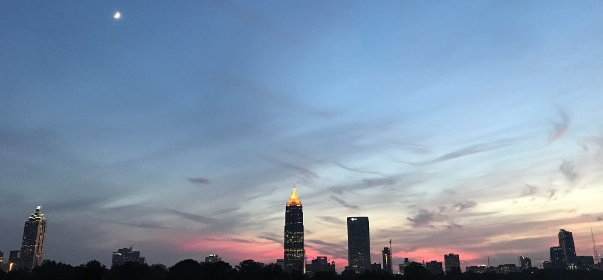

About Me
I was born and raised in Atlanta. I have recently graduated from the Front End Web Development Career Path bootcamp at Thinkful. I have a strong technical background having graduated from Georgia Tech with a degree in Mechanical Engineering. I have seen firsthand the importance of user friendly interfaces. Currently I am focusing on UX/UI.
I enjoy reading in my spare time and sketching on occasion. I have a deep love for sci-fi and the endless technological possibilities my favorite writers conjure up. I also enjoy a good RPG or video game when time permits. That being said, I’m partial to spending time outdoors and find it necessary to clear my head at times.

A picture of the Atlanta Skyline from the top of the Clermont Lounge